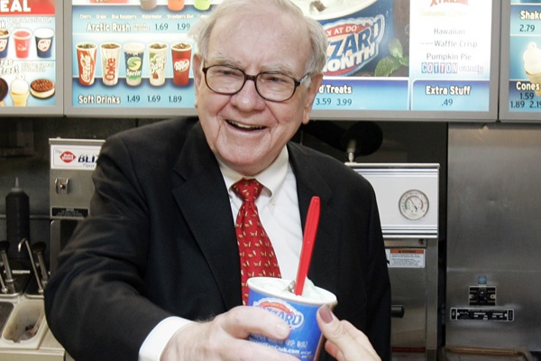

The man who turned patience into a philosophy and discipline into billions — and what reading his story changed in how I think about money and life.
My admiration for Warren Buffett really began after I read The Snowball. Before that, I just knew him as one of the richest and most successful investors in the world. But the book made him feel real to me — it showed his journey, his mistakes, his thinking, and how he built everything step by step. It was not the wealth that impressed me. It was the method.
What stayed with me the most was his mindset. He doesn't chase trends or get carried away by noise. He takes his time, understands things deeply, and makes decisions with conviction. That kind of patience is rare, and honestly, something I'm still trying to build within myself.
Reading about how he stuck to his principles even when others doubted him made me reflect on how important it is to trust your own thinking. In finance, especially, it's easy to get influenced by what everyone else is doing. Markets panic. Crowds chase momentum. Buffett's approach reminds me to slow down, think clearly, and focus on long-term value rather than short-term excitement.
Price is what you pay. Value is what you get. The distinction most people never pause to make.
Another thing that really inspires me is how simple he keeps his life. There's no unnecessary complexity — just clarity in thought and action. He still lives in the same house in Omaha he bought in 1958. He reads for hours every day. He avoids what he doesn't understand. It made me realize that success doesn't have to look flashy. Sometimes, it's just about doing the same things right over a long period of time.
The Snowball is not just a biography. It's a study in how a life gets built. Buffett's early years — buying his first stock at 11, delivering newspapers, doing taxes for neighbors as a teenager — reveal that the compounding wasn't just financial. It was also intellectual. He was always reading, always learning, always upgrading his mental models. The wealth was a byproduct of the thinking.
What hit me hardest was his partnership with Charlie Munger, who pushed Buffett toward buying wonderful companies at fair prices. That evolution — being willing to upgrade your own thinking when confronted with better information — is something I want to carry in every phase of my own work.
Even in my own journey in asset operations and finance, I often find myself going back to what I learned from his story. When reviewing film investment deals at BetterInvest, I think about underlying value — not just the projected return, but the quality of the collateral, the integrity of the structure, the durability of the cash flow.
Buffett has a concept he calls the "inner scorecard" — measuring yourself by your own standards rather than by what others think of you. That framing has helped me stay focused on building genuine skills over optimizing appearances.

For me, Buffett isn't just an idol. He's a constant reminder that the right mindset matters more than quick results. Be patient. Stay consistent. Don't compromise on fundamentals. Think in decades, not quarters. And never stop reading.